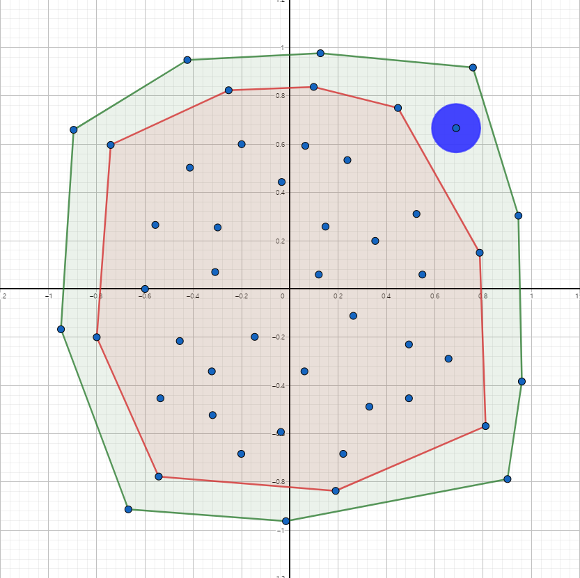
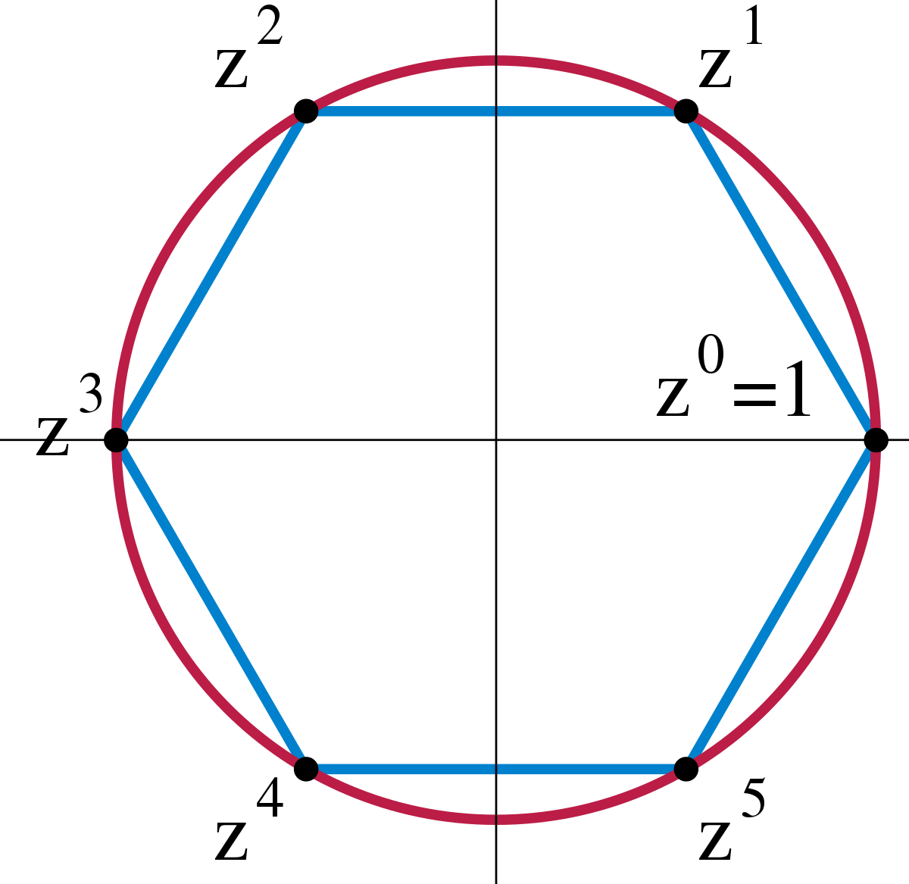
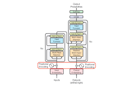
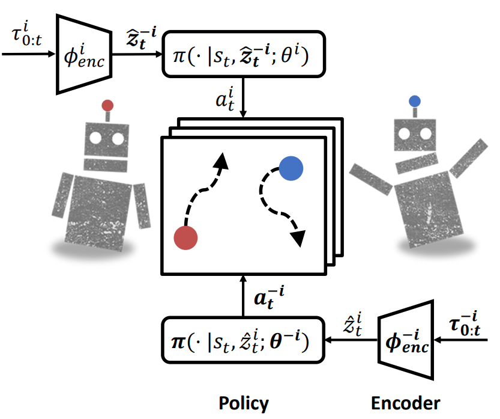
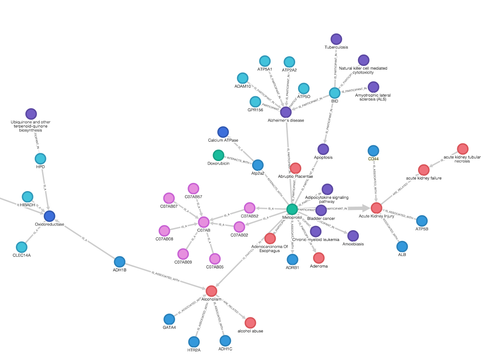
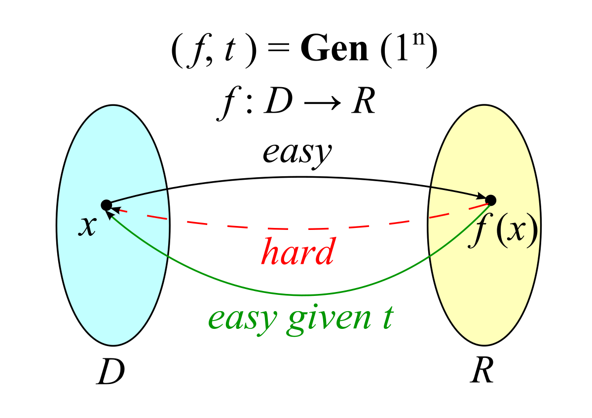

|
I am recent graduate from Tufts University advised by Professor Abiy Tasissa. My research interests are in the intersection of mathematics and machine learning. I’m interested in identifying and utilising algebraic and geometric properties in deep learning and optimization methods. Previously, I received my B.A. in Mathematics at Oxford. Before Tufts, I have been advised by such wonderful advisors: Professor Thomas Lukasiewicz at Oxford-CS, Dr. Andrey Kormilitzin, at Oxford Mathematical Institute, and Professor Christophe Petit at Oxford Mathematical Institute.Email / CV / Google Scholar GitHub |
|
|
Deep learning & Optimization |
|  |
arXiv : "RACH-Space: Reconstructing Adaptive Convex Hull Space with Applications in Weak Supervision" Weakly supervised learning Developed a novel algorithm which labels data when given partial, noisy information about the ground-truth labels. State-of-the-art performance on real world benchmark data. |
|  |
Machine Learning project, 2022 Geometric feature learning We focused on the framework for CNNs that are equivariant under arbitrary group transformations, and looked at its applications and limitations, experimenting on the MNIST dataset. |
Natural Language Processing |

|
Brigade Commander Award, Republic of Korean Army Start-up competition (2021) Fake News Detection Devised an online platform for fake news detection using neural models, aimed at small investors prone to fake news. Won Brigade Commander Award for Excellence. |
|  |
Undergraduate Summer research Transformer encoder Worked on conceptual space of a transformer encoder, studying the similarities between NLP architectures and the human brain. |
|  |
Woojoo Na, Andrey Kormilitzin Undergraduate Poster session 2018 n2c2 challenge In this challenge, we proposed a model for detecting Adverse Drug Events and Medication Extration in EHRs. We exploited CNN architecture and a character level word embedding model to demonstrate a robust approach to concept extraction and relation extraction. |
|  |
Undergraduate Summer research Knowledge graphs Worked on knowledge graph completion for ontology reasoning. |
Cryptography |
|  |
Alexander Allin, Woojoo Na, Christophe Petit IMACC-17 IMACC 2019 By leveraging group properties in Cayley hash functions, we introduce a trapdoor attacks on Cayley hash function parameters. |
|
Source code credit to Dr. Barron |